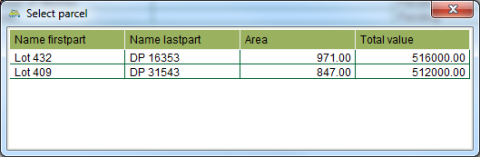

Maintain Property
The Maintain Property task allows you to update the details of an existing state land
property. You can change the area, add, edit or remove parcels, create new interests or vary
(change) an existing interest, add and edit notes, and add or remove property
relationships.
Steps
-
-
Lodge a new job. Make sure it includes the Maintain Property task. You also need to
 Add the state land property you want to
maintain on the Properties tab so SOLA State Land knows which property is to be
maintained.
Add the state land property you want to
maintain on the Properties tab so SOLA State Land knows which property is to be
maintained.
-
From the Tasks tab of the Job Details screen, select the Maintain Property task and
click the
 Start tool. The Property
Details screen will display.
Start tool. The Property
Details screen will display.
-
If you get a message indicating the property to display cannot be determined for
the task, ensure you have added the property you want to maintain on the Properties
tab of Job Details.
 Save your
changes and try to Start the task
again.
Save your
changes and try to Start the task
again.
-
If there is more than one property listed in the Properties tab of Job Details, the
Select Property dialog will display allowing you to choose which property to
display. Click your choice to open the Property Details screen.

Select Property dialog
-
-
On the General tab, edit the description and area or link any relevant documents as
required.
-
On the Parcels tab Add,
 Edit or
Edit or  Remove parcels as
required e.g. update the state land status for the parcels.
Remove parcels as
required e.g. update the state land status for the parcels.
-
On the Interests tab,
 Create or
Create or  Vary (change) any interests as required. When
you Vary an interest, a new pending
version of that interest is created. If you need to make further changes to the
interest information, select the pending interest in the Interests tab and
click Edit.
Vary (change) any interests as required. When
you Vary an interest, a new pending
version of that interest is created. If you need to make further changes to the
interest information, select the pending interest in the Interests tab and
click Edit.
-
On the Relationships tab, you can Add or
Remove any
relationship links as required.
-
When all relevant details have been edited for the property, click Save and close the Property Details screen.
-
On the Tasks tab of the Job Details screen, select the Maintain Property task and click
the
 Complete tool. This will run the
SOLA State Land business rules to validate the job data. If there is a critical
failure, you must remedy the failure as it will not be possible to approve the job
otherwise.
Complete tool. This will run the
SOLA State Land business rules to validate the job data. If there is a critical
failure, you must remedy the failure as it will not be possible to approve the job
otherwise.
-
If all tasks for the job are complete (or cancelled), proceed with approving (and
archiving) the job.
Notes
-
-
Maintain Property can also be used to change the state land status of all parcels
linked to the property. This may be appropriate if the property has completed the
formal purchase process to reflect the parcel(s) are now current state land instead of
proposed.
-
Maintain Property cannot be used to
 Extinguish existing interests. You must use the Cancel Interest task to accomplish
this.
Extinguish existing interests. You must use the Cancel Interest task to accomplish
this.
Also See
-
-
SOLA State Land
-
State Land Desktop Screens
-
Property How To
-
Interests How To